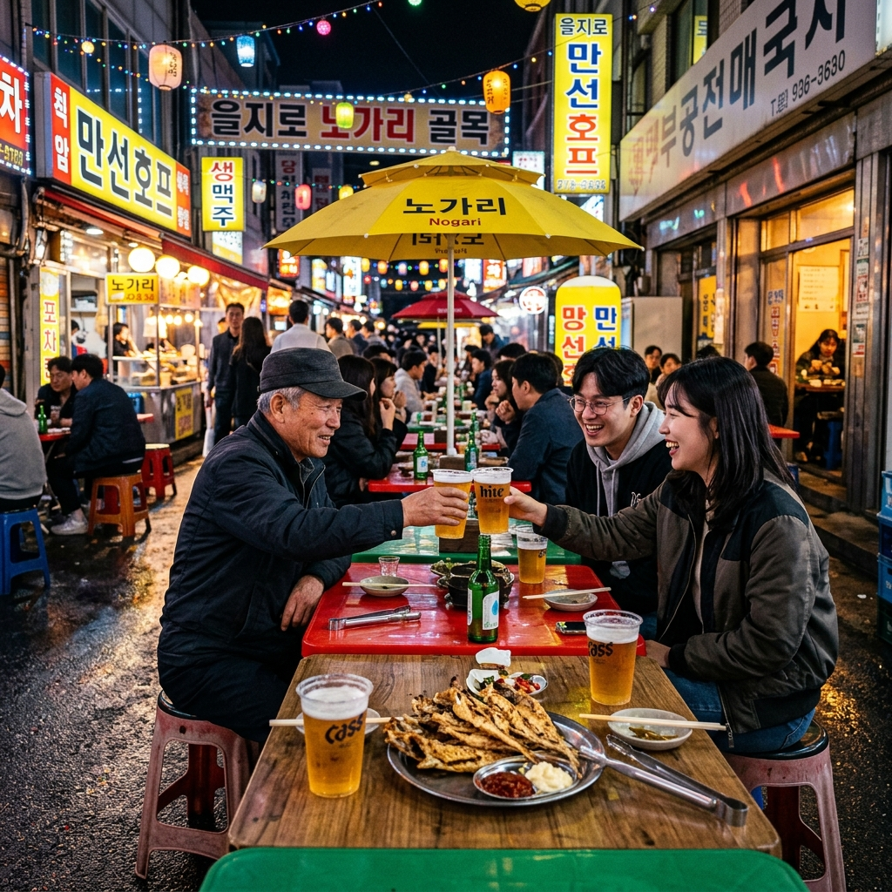
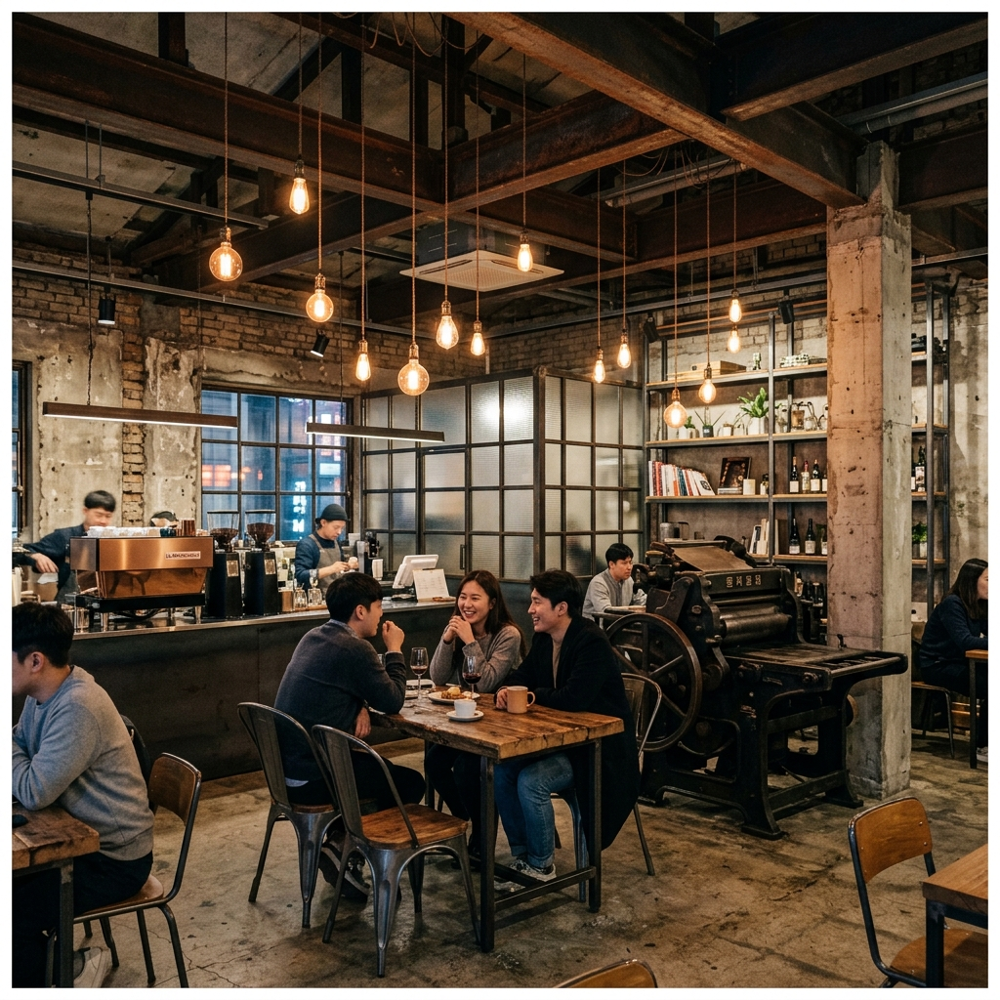
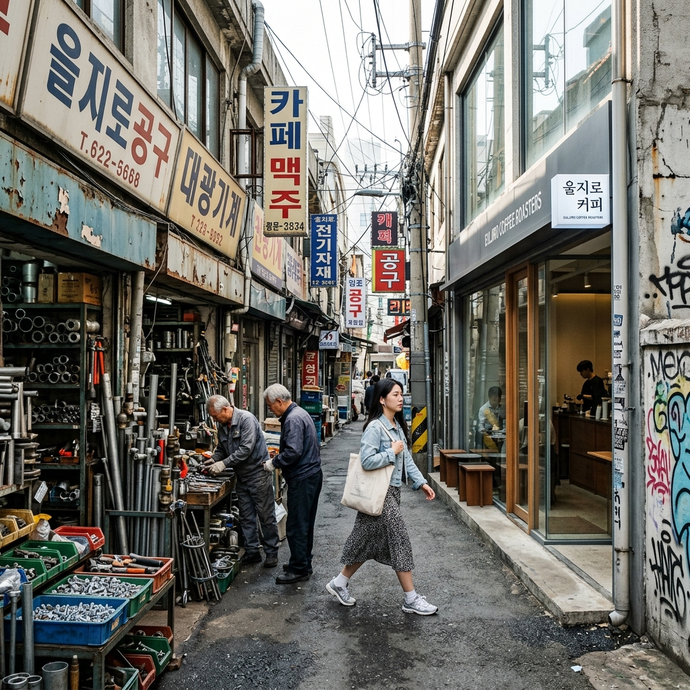

을지로 일대는 1960~80년대 산업화 시절, 한국 제조업의 심장부였습니다.
인쇄소·공구상·조명 도매점·전기 부품 가게가 빽빽하게 들어선 이 골목은 수십 년 동안 변화 없이 그 자리를 지켰습니다.
2010년대 중반, 임대료가 저렴하다는 이유로 젊은 예술가·바리스타·요리사들이 이 낡은 골목에 둥지를 틀기 시작했습니다.
그들은 공구상 옆에 스페셜티 카페를 열고, 인쇄소 사이에 이자카야를 차렸습니다.
노출 콘크리트와 철제 자재가 그대로 인테리어가 됐습니다.
이 '공구 골목의 반전 매력'이 SNS를 통해 퍼지며 '힙(Hip)+을지로'를 합친 '힙지로'라는 신조어가 탄생했습니다.
2026년 현재 힙지로는 을지로3가역에서 을지로4가역 사이, 특히 을지로 14길·을지로 16길·인쇄골목 일대를 중심으로 수백 개의 카페·바·식당이 공구상과 공존하는 독특한 생태계를 유지하고 있습니다.
힙지로 여행의 꽃은 단연 노가리 골목입니다.
을지로3가역 근방, 도로 위에 파라솔 테이블이 가득 펼쳐지는 이 거리에서 얼음 채운 플라스틱 컵 맥주 한 잔과 구운 노가리(작은 명태) 한 마리를 시키면 서울의 또 다른 얼굴이 보입니다.
노가리 한 마리에 3,000원 안팎, 생맥주 한 컵에 2,000~3,000원 — 을지로 노가리 골목은 서울에서 가장 저렴하게 야외 포차를 즐길 수 있는 곳입니다.
저녁 7시가 넘으면 빈자리를 찾기 어려울 정도로 사람이 몰립니다.
60~70대 어르신과 20~30대 청년이 나란히 앉아 맥주를 기울이는 풍경이 힙지로의 진짜 매력입니다.
이 골목에서 세대 간 장벽이 허물어집니다.
테이블은 도로 위에 세워진 것이라 비가 오면 영업이 어렵습니다.
맑은 날 저녁에 방문하세요. 우산 없이 오다 갑자기 비를 맞는 불상사를 방지하려면 기상청 앱으로 당일 오후 날씨를 미리 확인하세요.

노가리 골목에서 조금 더 걸으면 골뱅이무침으로 유명한 포장마차들을 만납니다.
골뱅이무침은 통조림 골뱅이(고둥의 일종)를 소면·오이·당근·양파와 함께 새콤달콤매콤한 양념에 무친 음식으로, 을지로 야식의 대표 메뉴입니다.
주문하면 커다란 양푼에 가득 쌓인 골뱅이무침이 나옵니다.
소면과 함께 비벼 먹으면 한 접시로 두세 명이 든든하게 즐길 수 있습니다.
가격은 대략 1인분 기준 12,000~18,000원 수준입니다.
골뱅이 거리 포장마차들은 대부분 오후 5시부터 새벽 1~2시까지 영업합니다.
자정이 넘어서도 자리가 붐빕니다.
을지로 골뱅이무침은 맵기 조절이 가능한 곳이 많으니 처음 시키실 때 '덜 맵게' 요청하시면 됩니다.
| 메뉴 | 가격(2026 기준) | 팁 |
|---|---|---|
| 노가리(구운 명태) | 1마리 3,000원 | 2~3마리 + 맥주 세트 추천 |
| 생맥주(플라스틱컵) | 2,000~3,000원 | 500ml 기준, 리필 가능한 곳 有 |
| 골뱅이무침(소면 포함) | 12,000~18,000원 | 2인 이상 주문 권장 |
| 오징어볶음 | 10,000~14,000원 | 맵기 조절 가능 |
| 닭발 | 8,000~12,000원 | 뼈 있는/순살 선택 가능 |
을지로 힙지로의 또 다른 얼굴은 독특한 공간 카페들입니다.
예전 인쇄소, 조명 창고, 금속 가공 공장이 카페와 갤러리, 바로 변신한 공간들이 을지로3가 골목 곳곳에 숨어 있습니다.
외관만 보면 아직도 공장처럼 보이는 낡은 철문 안에 스페셜티 커피와 내추럴 와인을 파는 공간이 존재합니다.
이러한 공간들은 인스타그램 팔로워들 사이에서 '힙지로 비밀 카페'라는 별칭으로 불리며, 주소가 아닌 '노출 콘크리트 건물 2층, 철문 안쪽'처럼 구어체로 공유됩니다.
처음 방문하는 분들은 네이버 지도의 '힙지로 카페' 검색보다, 인스타그램에서 '#힙지로카페', '#을지로카페' 해시태그를 검색해 최신 핫플을 파악하는 것이 더 효과적입니다.
이 골목 카페들은 의외로 낮 시간(오전 11시~오후 3시)도 조용하게 즐길 수 있습니다.
야간 포장마차 방문 전 오후 낮 시간에 카페를 방문하고, 저녁이 되면 노가리 골목으로 이동하는 것이 힙지로 하루 코스의 정석입니다.

힙지로의 낮은 밤과는 전혀 다른 세계입니다.
오전 9시부터 오후 5시까지, 을지로 공구 거리는 현역 제조업의 현장입니다.
배관·조명·공구·전기자재·철물·유리 가게들이 400m 이상의 거리를 메우고 있습니다.
이 골목에서는 세상에 있는 모든 볼트 크기를 살 수 있다는 말이 있을 정도입니다.
낮에 이 골목을 걷다 보면 서울의 숨겨진 산업 역사를 직접 목격하는 기분이 듭니다.
노출 배관, 레트로 간판, 컨베이어 벨트, 금속 절삭 소리 — 이 모든 것들이 하나의 살아 있는 박물관을 이룹니다.
현재 재개발 이슈가 꾸준히 제기되고 있어, 이 풍경이 언제까지 유지될지 모릅니다.
지금 이 순간 을지로 공구 거리를 걷는 것은 사라질 서울의 한 장면을 마음에 새기는 일이기도 합니다.
을지로4가역에서 충무로역 방향으로 걷다 보면 인쇄골목이 시작됩니다.
이 골목은 1970~80년대 한국 출판 산업의 메카였으며, 지금도 소규모 인쇄소 수십 곳이 영업 중입니다.
명함·팸플릿·스티커를 소량으로 빠르게 제작하려는 사람들에게는 여전히 최고의 선택지입니다.
인쇄골목 사이사이에는 요즘 젊은 작가들의 소형 갤러리와 독립 서점도 자리 잡았습니다.
한 손엔 방금 찍어낸 따끈한 리소그래피 포스터를, 다른 손엔 아이스 아메리카노를 들고 걷는 풍경이 낯설지 않습니다.
충무로역 일대에는 오래된 한식당들도 많아, 점심 식사 후 인쇄골목을 둘러보고 을지로3가 방향으로 걸어 돌아오는 루프 코스를 만들 수 있습니다.
힙지로는 대중교통 접근성이 매우 뛰어납니다.
서울 시내 어디서든 1~2회 환승으로 도착할 수 있습니다.
자가용은 최악의 선택입니다.
을지로 일대는 낮에도 공구 물류 차량이 좁은 골목을 막아서고, 저녁이 되면 포장마차 테이블이 도로를 차지합니다.
가장 가까운 공영주차장도 저녁 시간대는 대기가 길고, 요금도 시간당 4,000~6,000원 수준입니다.
힙지로는 사계절 내내 운영되지만, 노가리 골목 같은 야외 포장마차는 날씨에 민감합니다.
봄과 가을(4~5월, 9~10월)이 야외 포장마차를 즐기기에 최고의 계절입니다.
적당히 선선한 기온에 파라솔 아래 앉아 생맥주 한 잔을 기울이는 것이 이 시즌 최고의 로컬 경험입니다.
여름(6~8월)에는 야외보다 실내 카페와 이자카야 수요가 높아집니다.
더운 날씨에도 저녁 10시 이후 바람이 불기 시작하면 다시 야외 좌석이 채워집니다.
겨울(12~2월)에는 야외 포장마차의 파라솔 대신 비닐 천막이 씌워집니다.
화로에서 피어오르는 연기와 함께 뜨거운 청하 한 잔, 그리고 뜨겁게 구운 노가리 — 겨울 힙지로는 완전히 다른 감성입니다.

을지로 공구 골목은 현재 서울시의 도시재생사업과 재개발 논의가 교차하는 지점에 있습니다.
일부 구역은 이미 재개발 조합이 설립돼 공사가 시작된 곳도 있고, 또 일부는 역사·문화적 가치를 인정받아 보존 논의가 진행 중입니다.
이 복잡한 상황 때문에 힙지로를 찾는 이들 중에는 '사라지기 전에 가봐야 한다'는 마음으로 방문하는 분들도 적지 않습니다.
실제로 2~3년 전에 있던 카페가 재개발로 문을 닫은 경우도 있었습니다.
그래서 힙지로는 방문할 때마다 작은 변화를 발견하는 '살아 있는 도시 현장'이기도 합니다.
이 골목이 어떤 방향으로 변화하든, 지금 이 순간의 모습을 기억하는 것도 의미 있는 여행이 됩니다.